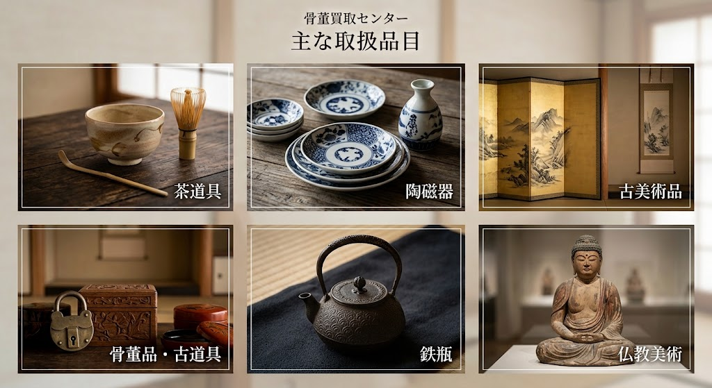

骨董品・美術品・古美術の出張買取
当社の買取サービスについて
当センターでは、お客様が今まで大切に保管されてきたお品物を売却されるにあたり、買取額はもちろんのこと、疑問や不安に思われる点にも丁寧にお応えいたします。
じっくりとお話をお伺いし、お客様に100％ご納得いただいた上で買取をさせていただきます。ご実家や蔵の整理、お引越しや遺品整理の際に出てきた古いお品物がございましたら、どんなことでもお気軽にご相談ください。

かんたん3ステップで無料査定いたします
お電話またはメールにて、お品物の概要やご都合の良い日時をお知らせください。
ご指定の場所へお伺いし、専門のスタッフが丁寧にお品物を査定いたします。
査定額にご納得いただけましたら、その場で現金にてお支払いいたします。
茶道具、陶磁器、古美術品、骨董品・古道具、鉄瓶、仏教美術など幅広く取り扱っております。記載のないお品物でも査定可能な場合が多くございますので、お気軽にご相談ください。
出張費・査定料・ご相談料などはすべて【無料】です。万が一査定額にご納得いただけず売却を見送られた場合でも、キャンセル料等の費用は一切発生いたしませんのでご安心ください。
はい、問題ございません。骨董品や古美術品は経年による汚れや傷があるのが自然です。ご自身で綺麗に磨こうとするとかえって価値を下げてしまうこともございますので、そのままの状態で拝見させてください。
お見積り・ご相談は無料です。お気軽にお問い合わせください。
※お品物の写真をお送りいただける場合はメールにてご連絡ください。
【運営概要】